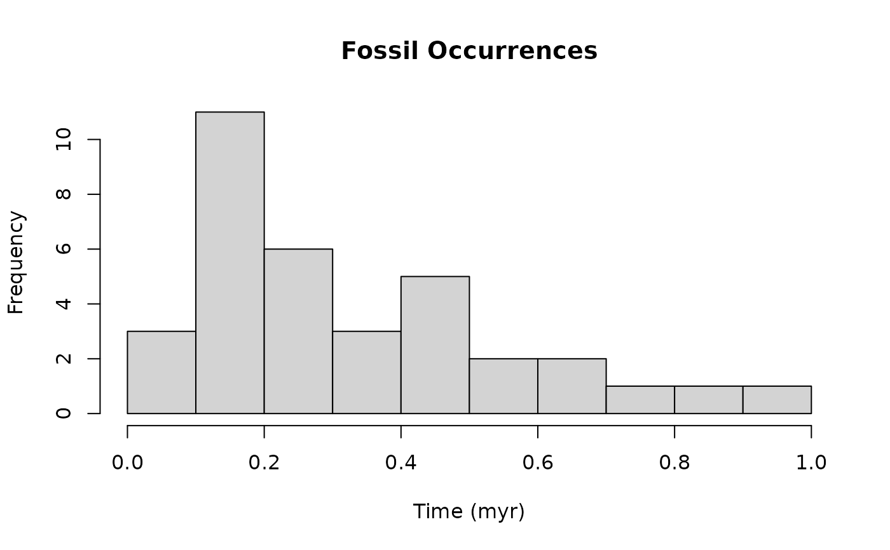
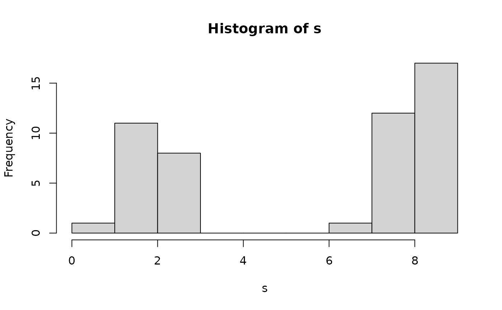

simulates events based on a variable rate Poisson point process. Rates can be either specified by a function passed to x, or by providing two vectors x and y. In this case the rate is specified by approxfun(x, y, rule = 2), i.e. by linear interpolation between the values of x (abscissa) and y (ordinate). See ?approxfun for details.
In the context of paleontology, these events can be interpreted as fossil occurrences or first/last occurrences of species. In this case, the rate is the average number of fossil occurrences (resp first/last occurrences) per unit
Arguments
- x
numeric vector or function. If x is a function, it is used to specify the variable rate. If x is a vector, x and y together specify the variable rate using linear interpolation
- y
numeric vector or NULL. If not NULL, determines the variable rate. This is done by using linear interpolation between the values of y. Here x specifies the ordinate and y the abscissa
- from
lower boundary of the observed interval
- to
upper boundary of the observed
- f_max
maximum value of
xin the interval fromx_mintox_max. If x attains values larger thanf_maxa warning is throw,f_maxis adjusted, and sampling is started again- n
NULL or an integer. Number of events drawn. If NULL, the number of events is determined by the rate (specified by x and y). If an integer is passed, n events are returned.
Value
numeric vector, timing/location of events. Depending on the modeling framework, these events can represent location/age of fossils, or first/last occurrences of a group of taxa.
See also
p3() for the constant rate implementation, rej_samp() for the underlying random number generation.
Examples
# assuming events are fossil occurrences
# then rate is the avg rate of fossil occ. per unit
#linear decrease in rate from 50 at x = 0 to 0 at x = 1
x = c(0, 1)
y = c(50, 0)
s = p3_var_rate(x, y, f_max = 50)
hist(s, xlab = "Time (myr)", main = "Fossil Occurrences")

# conditioned to return 100 samples
s = p3_var_rate(x, y, f_max = 50, n = 100)
# hand over function
s = p3_var_rate(x = sin, from = 0 , to = 3 * pi, n = 50)
hist(s) # note that negative values of f (sin) are ignored in sampling

# see also
#vignette("event_data")
# for details on usage and applications to paleontology